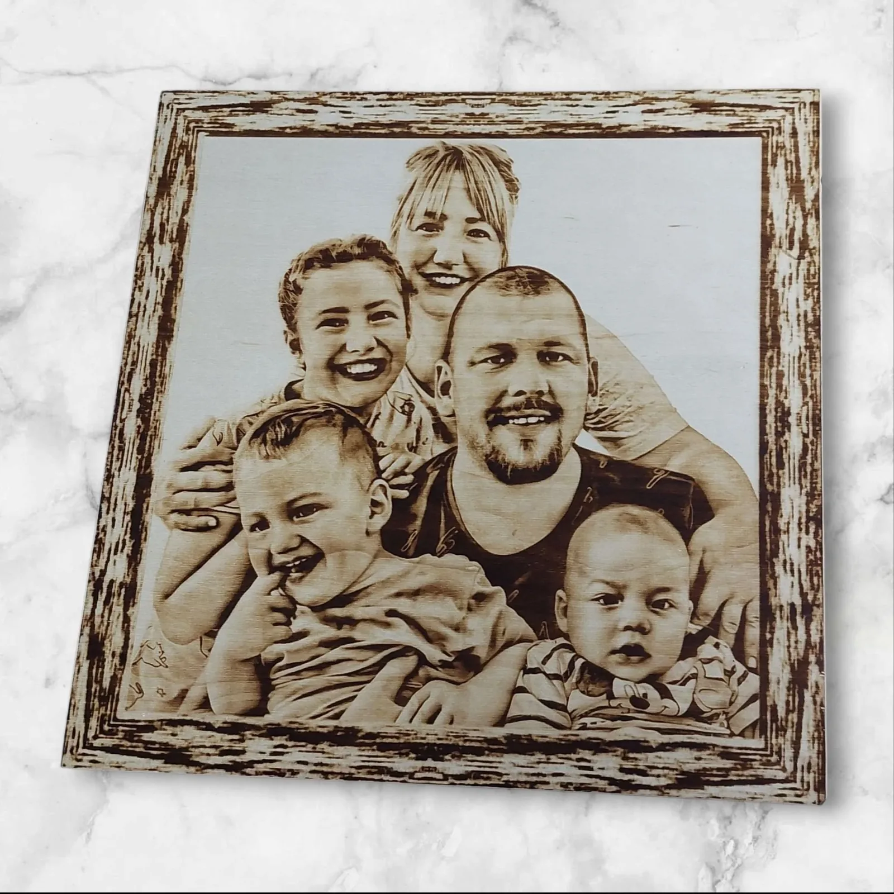

Pirografija: Kad Vatra Urezuje Portret Duše u Drvo
Objavljeno: 26. rujna 2025.
U svijetu brzih fotografija i digitalnih filtera, postoji nezasitna čežnja za nečim opipljivim, nečim što miriše na tradiciju i priču. Pirografija, umjetnost crtanja vatrom, je most između prošlosti i sadašnjosti. To nije samo tehnika; to je ritual strpljenja, gdje drvo prestaje biti samo materijal i postaje platno za sjećanje.
Fokus na portretu na drvetu posebna je kategorija. To je čin "paljenja" duše u materijal. Ali zašto ova stara tehnika i danas izaziva takvu fascinaciju? Ako vas više zanima preciznost, svakako pročitajte našu kolumnu o Laserskom Graviranju.
Kad Vatra Postane Kist: Intimnost i Toplina Pirografskog Portreta 🔥
Pirografija je jedina umjetnost u kojoj se svjetlost i sjena ne postižu bojom, već intenzitetom topline. To daje portretu duboku, rustikalnu toplinu koju nijedna fotografija ne može replicirati.

🖤 Kontrast koji traje
Dok klasične slike mogu izblijediti ili požutjeti, pirografski portret urezan je u samo tkivo drveta. Korištenjem CNC pirografa, stroj kontrolira točnost i intenzitet paljenja, stvarajući slojeve smeđih i crnih tonova mikronskom preciznošću. Oči, osmijeh, tekstura kose – sve je to precizno urezano, čineći kontrast neizbrisivim. To je portret koji ne bledi; on samo s godinama dobiva na patini.
🪵 Priča o drvetu i životu
Drvo kao medij donosi svoju vlastitu povijest. Svaka žila, svaki god je jedinstven, baš kao i osoba na portretu. Kada se slika unese u drvo, te dvije priče – priča o životu na drvetu i priča o životu na portretu – spajaju se. Krajnji rezultat je djelo koje je toplo na dodir, mirisno i duboko osobno. Zbog ovakve intimnosti, pirografija je idealna za personalizirane poklone.
Portret za Nasljeđe: Za Koga i Zašto Odabrati Pirografiju? 🖼️
Pirografski portreti savršeni su za trenutke koji traže trajnu posvetu i emotivnu težinu. Nisu za one koji vole prolazne trendove, već za one koji cijene dubinu i nasljeđe:
- Obiteljske Počasti: Idealan način za očuvanje sjećanja na djedove, bake ili obiteljske korijene. Portret postaje dio obiteljske ostavštine, dar koji putuje kroz generacije.
- Poklon Mladenki/Mladoženji: Umjesto klasične fotografije, portret izrađen vatrom simbolizira snagu veze i toplinu doma. Savršen, jedinstven poklon za godišnjice.
- Portreti Kućnih Ljubimaca: Naši krzneni prijatelji zaslužuju trajnu posvetu. Pirografija im daje teksturu i karakter koji se savršeno prenose na drvo.
Epilog: Više od Slike, Manje od Riječi ✨
Za razliku od štampe ili bojanja, pirografija gori pigmente u drvetu, čineći ih otpornim na vrijeme i zabor. Dok papirnati predmeti blijede, a digitalni fajlovi se gube, precizna i postojana gravura stvorena CNC pirografom postaje dio ostavštine. Ona nije samo dar; to je trajno arhiviranje sjećanja koje putuje kroz generacije.
Dopustite nam da vašu omiljenu fotografiju pretvorimo u taktilni, jedinstveni spomenik koji prkosi zubu vremena.